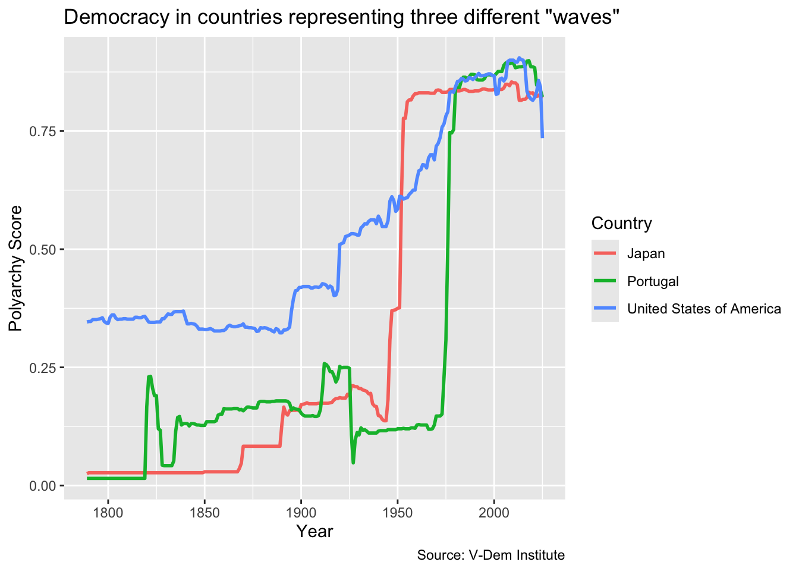
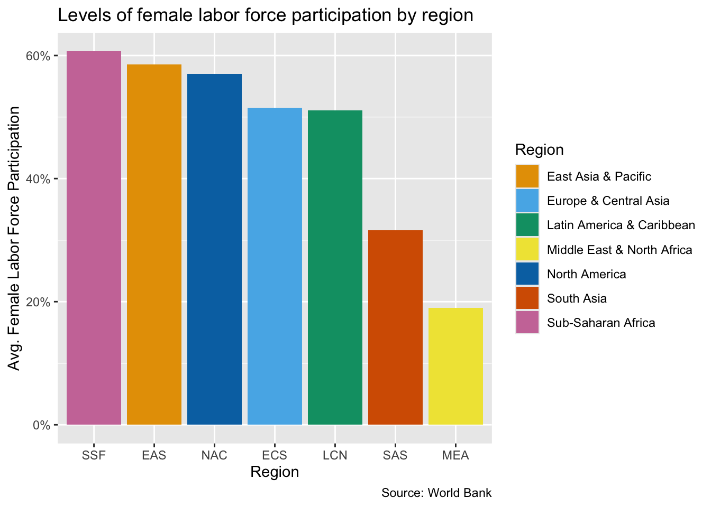
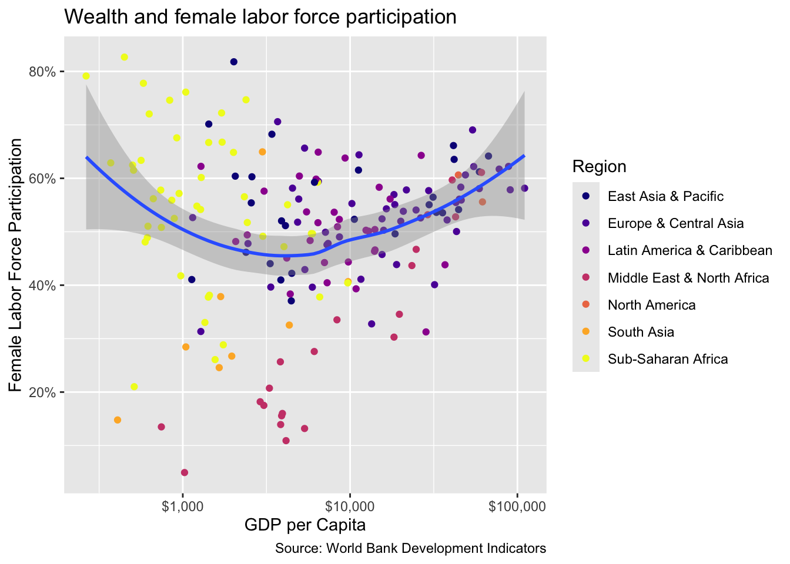
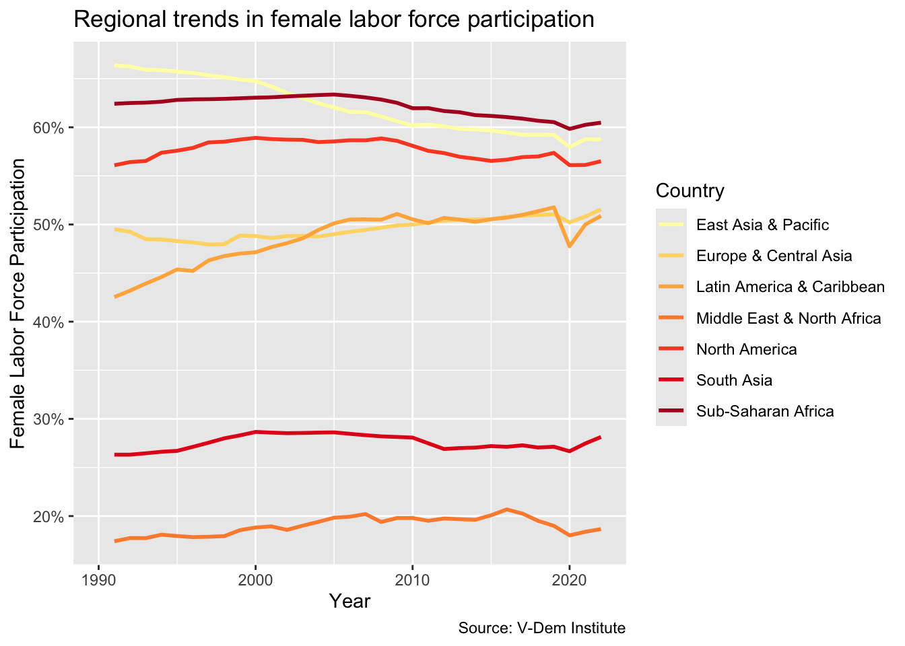
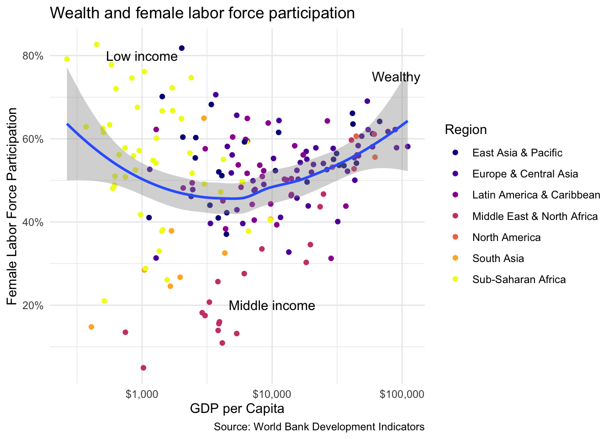
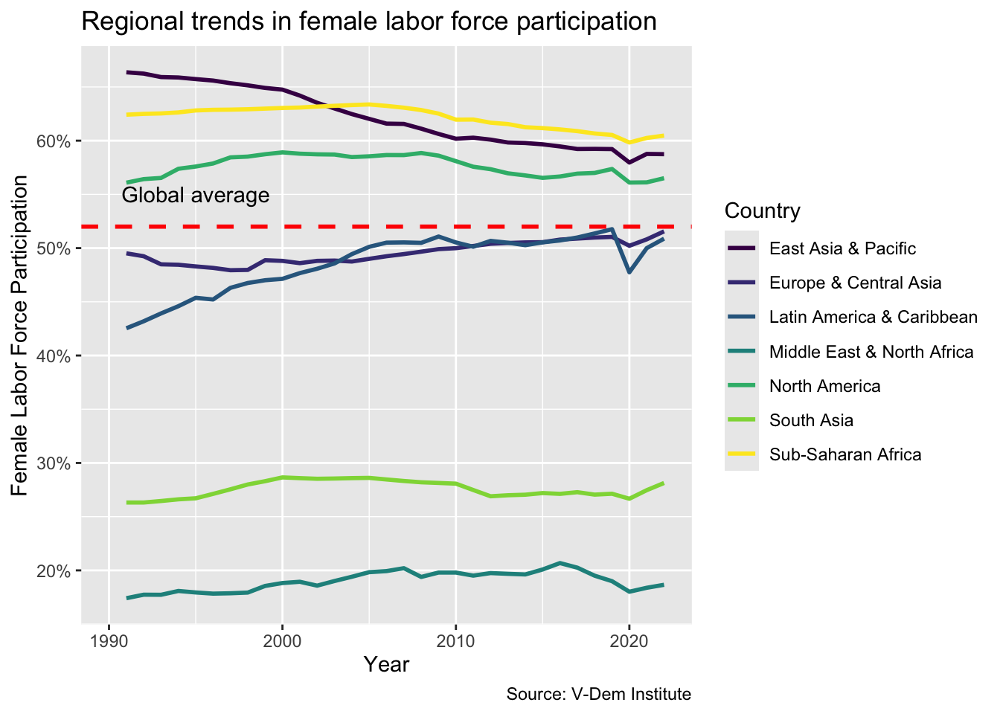
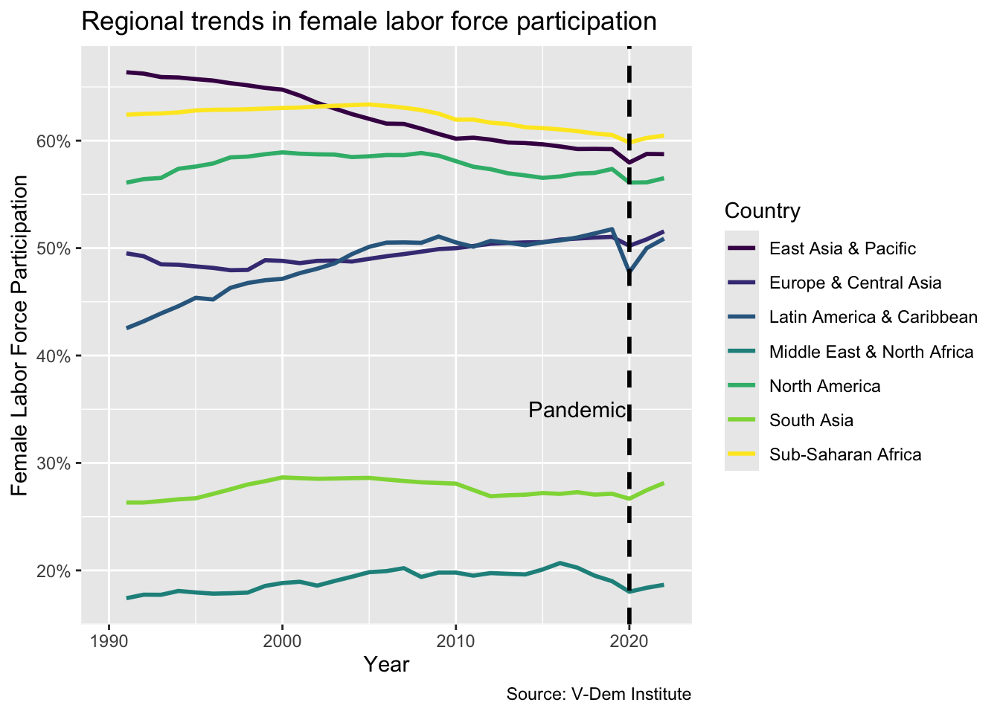

Install plotly (install.packages("plotly")) and have a look at the documentation
Install colorBlindness (install.packages("colorBlindness")) and read this vignette
Generate a quarto document named “module-2.2.qmd” in your “modules” project folder so that you can code along with me
In your quarto document, run these code chunks and familiarize yourself the data frames that they generate
Note the use of drop_na() from the tidyr package in constructing the flfp_gdp data frame. drop_na() is a convenient function for dropping rows with missing values.
library(readr)library(dplyr)library(tidyr)library(ggplot2)library(wbstats)library(countrycode)indicators=c(flfp ="SL.TLF.CACT.FE.ZS", gdp_pc ="NY.GDP.PCAP.KD")# define indicators## Regional levels of FLFP for column chart flfp_gdp_regions<-wb_data("SL.TLF.CACT.FE.ZS", country ="regions_only", mrnev =1)|>rename( region =country, year =date, flfp =SL.TLF.CACT.FE.ZS)|>select(region, iso3c, year, flfp)flfp_gdp_regions
# A tibble: 7 × 4
region iso3c year flfp
<chr> <chr> <dbl> <dbl>
1 East Asia & Pacific EAS 2025 58.1
2 Europe & Central Asia ECS 2025 51.1
3 Latin America & Caribbean LCN 2025 51.4
4 Middle East, North Africa, Afghanistan & Pakistan MEA 2025 19.7
5 North America NAC 2025 56.8
6 South Asia SAS 2025 33.0
7 Sub-Saharan Africa SSF 2025 65.2
## Cross-section of data on FLFP and GDP per capita for scatter plotflfp_gdp<-wb_data(indicators, end_date =2021)|># download data for 2021left_join(select(wb_countries(), c(iso3c, region)), by ="iso3c")|># add regionsdrop_na()# drop rows with missing valuesglimpse(flfp_gdp)
## Time series data on regional trends in FLFP for line chartflfp_ts<-wb_data("SL.TLF.CACT.FE.ZS", country ="regions_only", start_date =1990, end_date =2022)|>rename( region =country, year =date, flfp =SL.TLF.CACT.FE.ZS)|>select(region, iso3c, year, flfp)glimpse(flfp_ts)
In this module we are going to take our visualizations from Module 2.1 and improve them. In the first part of the lesson we are going to focused on how to make your visualizations accessible to a color-blind audience. Then we will discuss how to improve the look of your visualizations with themes and to provide additional information and context with annotations. Finally, we will spend some time talking about how to make your graphs interactive so that users can explore them in a more dynamic and flexible way.
Color schemes
There are a number of different types of color blindness, but the most common type is red-green color blindness. Making your visualizations colorblind-accessible can be important for convincing certain audiences. Most notably, approximately 8% of men are affected by color blindness.
Let’s start off by looking at the line chart that we did in the last module pertaining to Huntington’s three waves of democratization:
dem_waves_ctrs<-read_csv("data/dem_waves_ctrs.csv")dem_waves_chart<-ggplot(dem_waves_ctrs, aes(x =year, y =polyarchy, color =country))+geom_line(linewidth =1)+labs( x ="Year", y ="Polyarchy Score", title ='Democracy in countries representing three different "waves"', caption ="Source: V-Dem Institute", color ="Country")dem_waves_chart

The problem with this plot is that people with red-green color blindness will not be able to distinguish between the lines for Japan and Portungal. There are many tools that we could use to see how this is true, but here we are going to focus on the color vision deficiency (CVD) simulator from the colorBlindness package. To use it, all we have to do is load colorBlindness and call cvdPlot() on the stored plot.
In this output, we can see how deuteranopia and protonopia (red-green color blindness) would experience our plot. Notice how hard it is to distinguish between Japan and Portugal here. We can also see how someone with monochromatic vision would see the plot by looking at the “desaturated (BW)” plot. While monochromatic vision is very rare, we can use this plot to make adjustments for a worst-case scenario.
So once you determine that your color scheme is not colorblind friendly, what should you do? There are two basic solutions available to you: making your own colorblind friendly color scheme or use a package that produces colorblind-friendly schemes for you.
Let’s try using an example color scheme from the R Cookbook to fill in the bars of a column chart. Here we will make use of the regional levels of female labor force participation data that we prepped in the prework section of this module. First we create a vector of colors called cb_palette. Then we build our bar chart and save it as an object called flfp_region. Crucially, when we perform our ggplot call, we include fill = region as a third dimension in our aes() function. This is in addition to including the region code iso3c on the x-axis. Finally, we use our palette to shade our bars using scale_fill_manual().
cb_palette<-c("#E69F00", "#56B4E9", "#009E73", "#F0E442", "#0072B2", "#D55E00", "#CC79A7")flfp_region<-ggplot(flfp_gdp_regions, aes(x =reorder(iso3c, -flfp), y =flfp, fill =region))+geom_col()+scale_y_continuous(labels =scales::label_percent(scale =1))+labs( x ="Region", y ="Avg. Female Labor Force Participation", title ="Levels of female labor force participation by region", fill ="Region", caption ="Source: World Bank")flfp_region+scale_fill_manual(values =cb_palette)

Now we can check our visualization using the cvdPlot() function from the colorBlindness package.
Although it would still be difficult for a person with red-green color blindness to see some of the colors in the chart (like the pink of SSF or the bright green of LAC), it would still be possible for them to distinguish the colors of the bars based on what would appear to them as shades of grey.
Use viridis
Another option is to use a package designed with accessibility issues in mind. One of the more popular ones is the viridis() package. To use it just load viridis and add a viridis color scheme to the plot. You have the option of choosing continuous, discrete or binned color schemes but here we use the discrete option scale_fill_viridis_d() because our regions constitute a discrete variable. You can also try different viridis color maps by inserting the various available schemes in the function. For example you can get the “plasma” map with `scale_fill_viridis_d(option = “plasma”). The default map is “viridis.”
This is pretty good. In fact it looks fairly close to the original. It is even to easy to see the differences in colors when looking at the desaturated output. Of course the first column for the black and white plot is difficult to distinguish from the plot’s background, but we will learn how to change this up later in this module.
Use ColorBrewer
Another package available to us is the RColorBrewer package. Technically, RColorBrewer is a separate package but its color mappings come available as part of ggplot2, so we don’t have to load RColorBrewer in order to use it with ggplot2. We can also use the color brewer palette selector tool to help select palettes that are “colorblind safe.”
Let’s try updating our column chart with a ColorBrewer color scheme:
One thing to note is that when we want to adjust the color scheme for a scatter plot or line chart, we should use “scale_color” instead of “scale_fill”, e.g. scale_color_manual(), scale_color_viridis_d(), scale_color_brewer. Let’s try a couple of examples. First, let’s add a viridis color map to a scatter plot. We will use the flfp_gdp data we prepped in the prework section to generate our scatter plot.
wealth_flfp<-ggplot(flfp_gdp, aes(x =gdp_pc, y =flfp))+geom_point(aes(color =region))+# color points by regiongeom_smooth(method ="loess", linewidth =1)+# make the line a loess curvescale_x_log10(labels =scales::label_dollar())+# stretch axis, add '$' formatscale_y_continuous(labels =scales::label_percent(scale =1))+# add % labellabs( x="GDP per Capita", # x-axis title y ="Female Labor Force Participation", # y-axis title title ="Wealth and female labor force participation", # plot title caption ="Source: World Bank Development Indicators", # caption color ="Region"# legend title)wealth_flfp+scale_color_viridis_d(option ="plasma")

Now let’s try adding a ColorBrewer scheme to a line chart. Here we will use the flfp_ts data frame that we prepped in our prework routine.
flfp_line<-ggplot(flfp_ts, aes(x =year, y =flfp, color =region))+geom_line(linewidth =1)+scale_y_continuous(labels =scales::label_percent(scale =1))+labs( x ="Year", y ="Female Labor Force Participation", title ="Regional trends in female labor force participation", caption ="Source: V-Dem Institute", color ="Country")flfp_line+scale_color_brewer(palette ="YlOrRd")

Themes
Another thing that we can do to improve the overall look of our plots is to change the theme. Here is a list of themes that are available with ggplot2.
There are also many extension packages that you can use to apply even more themes, some of which we may encounter later in the course.
For now, let’s take a couple of plots that we developed earlier in the lesson and apply some ggplot2 themes to them. We can do this by simply adding the name of the theme to our code.
Sometimes it makes sense to include annotations in our charts. We can achieve this by applying the annotate() function. To add a text annotation, we include “text” for the first argument, then the value of x and y at which we want our annotation to appear, and finally the text of the annotation that we want to display. Let’s try adding text to our indicating where high-, middle- and low-income countries are concentraed on the wealth_flfp scatter plot that we developed earlier.
wealth_flfp<-wealth_flfp+scale_color_viridis_d(option ="plasma")+theme_minimal()wealth_flfp+annotate("text", x =90000, y =75, label ="Wealthy")+annotate("text", x =1000, y =80, label ="Low income")+annotate("text", x =10000, y =20, label ="Middle income")

Another common annotation involves combining text with a horizontal or vertical reference line. For a horizontal intercept line we include an additional geom called geom_hline. The first argument is the value yintercept where we want the reference line to cross. Then we can add additional arguments to define the style, color and size of the line.
flfp_line<-flfp_line+scale_color_viridis_d()flfp_line+geom_hline(yintercept=52, linetype="dashed", color ="red", size =1)+annotate("text", x =1995, y =55, label ="Global average")

The same logic applies for a vertical reference line, except this time the geom is called geom_vline and the first argument, xintercept, is the point at which we want the line to cross the x-axis.
flfp_line<-flfp_line+scale_color_viridis_d()flfp_line+geom_vline(xintercept=2020, linetype ="dashed", size =1)+annotate("text", x =2017, y =35, label ="Pandemic")

Interactivity
One final thing we can do, which is really fun, is to add interactivity to our plots with plotly. We can do this by simply calling ggplotly() on our plot object.
In a lot of cases, we may want to control the tool tip of the plot. The tool tip is what appears when the user hovers over information on the chart. In this next example, the chart does not look that great unless we add the tooltip argument. But it is fairly simple to do. We just add the elements that we want to appear in a combine function, e.g. c(). In this case we will include region and female labor force participation in the tool tip.
flfp_region<-flfp_region+scale_fill_brewer(palette ="YlGn")+theme_minimal()ggplotly(flfp_region, tooltip =c("region", "flfp"))# controlling the tooltip output
Another thing we may want to do is to include some additional annotations. We might also notice that some of the things we include in the labs argument in ggplot2 do not get picked up by plotly and that we have to add them back with a layout(annotations = ) call. One additional idiosyncrasy is that any item that we want to include in the plotly chart has to be passed as an argument in the ggplot code. For example, we need to include aes(label = country) to view country in tool tip. But plotly does support the R native pipe operator and that makes it a little easier to layer on multiple annotations.
library(plotly)wealth_flfp_plotly<-wealth_flfp+scale_color_viridis_d(option ="plasma")+theme_minimal()+aes(label =country)# need so ggplot retains label for plotlyggplotly(wealth_flfp_plotly, tooltip =c("country", "flfp", "gdp_pc"))|>layout(annotations =list(text ="Source: World Bank Development Indicators", font =list(size =10), showarrow =FALSE, xref ='paper', x =1.1, xanchor ='right', xshift =0, yref ='paper', y =-.1, yanchor ='auto', yshift =0))|># add web addresslayout(annotations =list(text ="www.dataviz-gwu.rocks", font =list(size =10, color ='grey'), showarrow =FALSE, xref ='paper', x =.5, xanchor ='center', xshift =0, yref ='paper', y =1, yanchor ='top', yshift =0))
Notice that plotly has some fairly unique syntax for the layout() function. It helps to read the documentation but also to search around on google and Stack Overflow. Each annotation needs to be inputted in a list format. The first time in the list is the text you want to include in the annotation. From there you can include multiple arguments to specify the font size and location of the annotation.